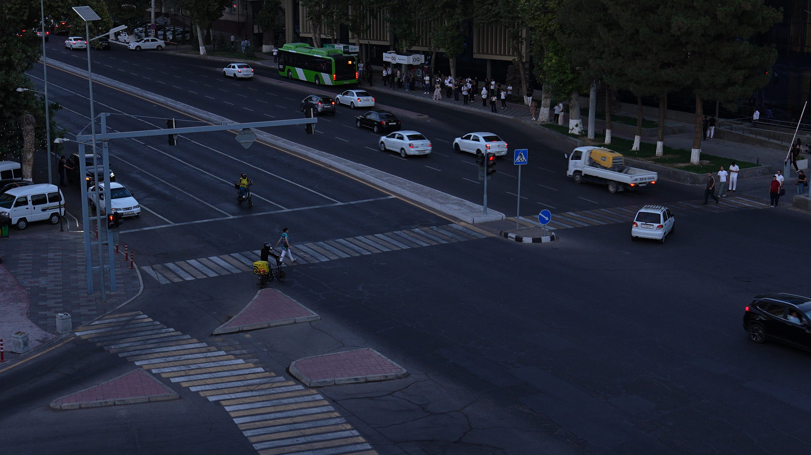

WIUT Hackathon 2026 · CV track
See the event.
Before it becomes an accident.
A detector, a tracker and fourteen explainable rules turn a fixed CCTV view into labelled events; a causal risk model watches for conflicts frame by frame.

01 · System
Problem and approach
Part A returns [start_sec, end_sec, label] for 14 event classes; Part B returns,
at every frame, the probability that an accident starts within 5 s using only past frames.
What is learned
What is rule-based
Event rules
Search the exact logic used at inference.
| Class | Rule |
|---|
14 rules
02 · Evidence
EDA of the sample videos
What the camera sees, measured by our own detector and tracker.
EDA data will appear here after tools/eda.py runs on the sample videos.
03 · Output
Results on the sample videos
Annotated sample recordings, event timelines and accident-risk curves. Click any event or any point of the curve to jump the video there.
Playback is downscaled and frame-sampled for the web, preserving the input timeline. Labels are model predictions, not verified annotations.
Results will appear here after tools/export_results.py runs.
04 · Experience
Live demo
Upload an .mp4 from the road camera, up to 2 minutes and 500 MB. The model runs on a CPU and returns the events, an annotated video, the timeline and the risk curve.
05 · Retrospective
Technical report
06 · People
Zero Context
07 · Reproduce